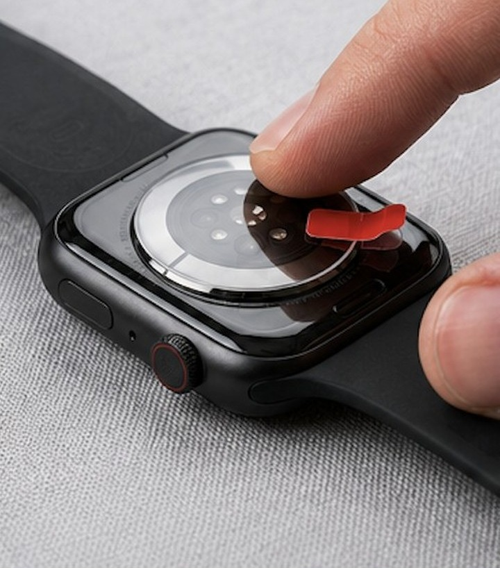

Sensor Tattoo Fix guide
Garmin Not Reading Heart Rate on Tattooed Skin?
On Garmin watches, heart-rate gaps, uneven sleep data, or incomplete activity metrics may relate to ink under the optical sensor — and also to fit, motion, and skin contact.
See where to buy Open the official store

Typical Garmin symptoms
- Heart-rate failures or gaps in the chart
- Inconsistent sleep or other all-day metrics that depend on optical quality
- Interrupted or incomplete data during activities
- Training metrics that look off when the optical signal is weak
Not every gap comes from a tattoo. Band position, sweat, motion, and the watch’s own algorithms also matter.
Why a tattoo can interfere
On Garmin watches with a wrist optical sensor, LEDs and detectors estimate heart rate and feed training and recovery metrics. Pigment under the watch can reduce the light that returns to the sensor and create gaps in the chart.
Forerunner, Fenix, and Venu models do not all respond the same way, and not every ink causes failure. Band position, sweat, and hard motion also affect optical signal quality.
The Sensor Tattoo Fix lens
The Sensor Tattoo Fix optical lens sits at the sensor area to help when pigment makes readings harder. It does not replace a chest strap and does not guarantee recovery of every Garmin metric.
Pick the diameter that matches your Forerunner, Fenix, Venu, or other listed model — do not assume every Garmin uses the same size.
Compatibility
On Garmin, size also follows the sensor diameter / geometry of your Forerunner, Fenix, Venu, or other listed model — not the product line name alone. Check the official store option before you buy.
Open the store to choose your size
Application and what to expect
International orders are for the Sensor Tattoo Fix optical lens. Follow the application guidance provided with your order and on the product page. Do not assume water resistance, adhesion, or durability beyond what is stated in the official listing.
Buy the Sensor Tattoo Fix optical lens
Official store only — PayPal, card, and tracked shipping. International offering is the optical lens (not the Brazilian kit accessories).
5.0 · verified buyers
FAQ
How can a tattoo affect Garmin readings?
Ink can change how much light returns to the wrist optical sensor, which may affect heart rate and related metrics. It is not the only possible factor.
I heard Garmin handles tattoos better — do I still need a lens?
Some models cope better, but dense ink under the sensor can still interfere. If you already see persistent gaps in that area, evaluating the lens can make sense.
Does it work on every Forerunner / Fenix / Venu?
We do not claim universal compatibility. Confirm your sensor diameter in the official store.
Does it affect GPS?
The lens is intended for the wrist optical sensor, not the GPS antenna.
How do I apply the lens?
Follow the guidance that ships with your order and the product page.
Can readings still fail for other reasons?
Yes. Fit, motion, sweat, and optical limits still matter even with the lens.
Where do I buy the correct lens?
Use the official store block on this page (international offering is the optical lens).
Next step
Confirm your sensor size in the official store, then complete checkout with tracked shipping. The purchase block is above.